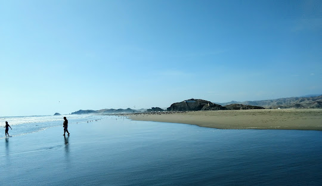
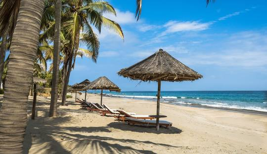
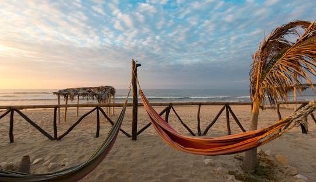
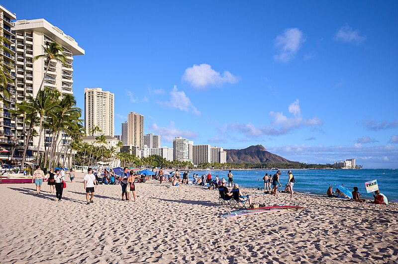
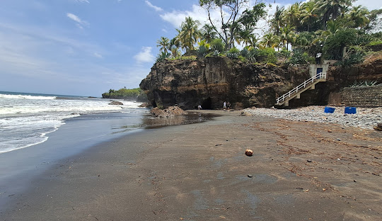

Cerro Azul

Cerro Azul es conocido por su tranquilidad y belleza natural, ideal para un escape relajante, ubicada en la región de Lima, al sur de la capital. Es famosa por su encanto tradicional, su muelle histórico y sus olas ideales para el surf.
Máncora (Piura)

Máncora es famosa por su vida nocturna vibrante y su ambiente de fiesta.
- Paisaje:
Cerro Azul tiene un ambiente más tradicional y rústico, con un muelle icónico y vistas tranquilas. Máncora, por otro lado, ofrece un clima tropical, palmeras y playas de arena blanca más extensas.
- Actividades:
Ambos lugares son ideales para surfear, pero Máncora también es popular para el kitesurf y tiene una vida nocturna vibrante, mientras que Cerro Azul es más tranquilo.
- Turismo:
Máncora es un destino turístico internacional más desarrollado, con hoteles de lujo y restaurantes modernos, mientras que Cerro Azul conserva un aire más local y tradicional.
Punta Sal (Tumbes)

Paracas ofrece paisajes desérticos únicos y es popular para los deportes acuáticos.
- Clima:
Punta Sal tiene un clima más cálido y soleado durante todo el año, mientras que Cerro Azul puede ser más frío y húmedo durante el invierno.
- Ambiente:
Punta Sal es ideal para relajarse, con aguas más cálidas y calmadas. Cerro Azul es más dinámico, especialmente para quienes buscan surfear o explorar su historia.
Cancún, México

Cancún es conocido por sus resorts de lujo y playas de arena blanca.
- Paisaje:
Cerro Azul tiene un entorno más rústico y sereno, con su emblemático muelle y vistas relajantes, mientras que Cancún se destaca por su lujo, arenas blancas infinitas y el impactante contraste con las aguas turquesas.
- Ambiente:
Cancún es vibrante y cosmopolita, con una vida turística activa que combina lujo y modernidad, mientras que Cerro Azul es apacible y tradicional, ofreciendo una experiencia más auténtica y local.
- Clima:
Cancún disfruta de un clima tropical cálido y húmedo, con temperaturas elevadas casi todo el año. En contraste, Cerro Azul tiene un clima más templado y seco, con brisas frescas que acompañan sus días soleados.
Waikiki Beach (Hawái, EE. UU.)

Waikiki Beach combina surf, aguas cálidas y un toque urbano.
- Cultura:
Waikiki Beach está impregnada de la cultura hawaiana, desde sus danzas tradicionales hasta sus celebraciones en la playa. Por su parte, Cerro Azul refleja la identidad peruana a través de su gastronomía marina y su legado pesquero.
- Paisaje:
Mientras Waikiki Beach ofrece un contraste entre rascacielos modernos y playas paradisíacas, Cerro Azul presenta un horizonte más sereno, marcado por su muelle emblemático y un entorno natural sin artificios.
El Tunco (El Salvador)

El Tunco atrae con olas constantes y una vibra bohemia.
- Actividades:
El Tunco es un destino emblemático para los surfistas avanzados y para quienes buscan explorar su vida nocturna bohemia. Cerro Azul, aunque también ideal para el surf, se inclina hacia actividades más relajadas como paseos en el muelle o disfrutar de la pesca local.
- Ambiente:
El Tunco tiene una atmósfera juvenil y energética, con viajeros de todo el mundo buscando aventuras. En comparación, Cerro Azul ofrece un espacio más íntimo y familiar, perfecto para quienes buscan tranquilidad.